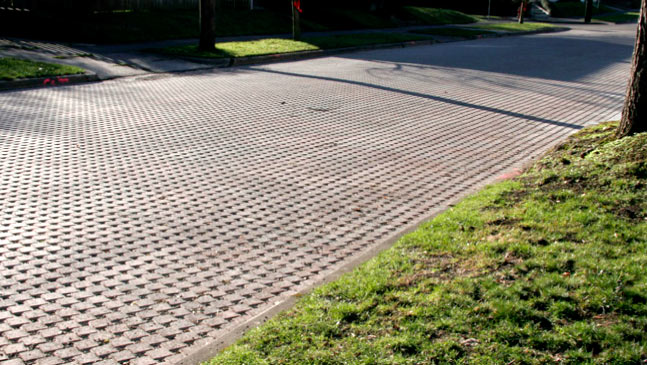

Pavimento permeável que torna mais eficaz a dissipação de calor e diminui o efeito de ilhas
de calor. Ele permite que a água se infiltre dentro do pavimento e ajuda no resfriamento do solo.

Diferenças
Os pavimentos permeáveis são uma alternativa mais sustentável ao asfalto tradicional.
Diferente do concreto comum, esse tipo de pavimento permite que a água da chuva infiltre
no solo, reduzindo o acúmulo de água nas ruas e ajudando no resfriamento da superfície.
O asfalto convencional absorve muito calor durante o dia e o libera lentamente à noite,
aumentando ainda mais a temperatura das cidades.
Já os pavimentos permeáveis dissipam o calor com maior eficiência, diminuindo o efeito
das ilhas de calor urbanas.
Vantagens
Entre os principais benefícios desse tipo de pavimento estão:
redução da temperatura das ruas e calçadas;
diminuição de enchentes e alagamentos;
maior absorção da água da chuva pelo solo;
melhoria da drenagem urbana;
aumento do conforto térmico para pedestres.
Esse tipo de solução pode ser aplicado em calçadas, estacionamentos, praças e áreas de
circulação, contribuindo para cidades mais frescas e sustentáveis.